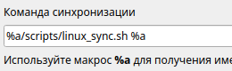

Самая нужная программа на свете
Подробнее
Все 3 скрипта я положил в папке scripts в корне хранилища. Туда же ложаться и логи.
Сами файлы логов я не храню в git, поэтому добавил их в исключения в файле .gitignore:
scripts/*.log
Если же логи уже отслеживаются git’ом, то можно их оттуда убрать:
git rm --cached scripts/*.log
В настройках программы MyTetra сама команда синхронизации будет такой (пример для Linux-скрипта):
%a/scripts/linux_sync.sh %a
, где %a – макрос для получения имени директории с данными.

Если для доступа к удаленному репозиторию используется тип авторизации по паролю (а не по ssh-ключу), то при выполнении некоторых команд (например, git push) выполнение скрипта будет остановлено в ожидании ввода пароля. Во избежании этого можно попросить git сохранить пароль локально с помощью команды:
$ git config credential.helper store
После этого нужно будет ввести пароль в последний раз и он сохранится.
В прикреплённых файлах есть скрипт для Windows и для Linux.
Больше можно узнать на сайте по ссылке.